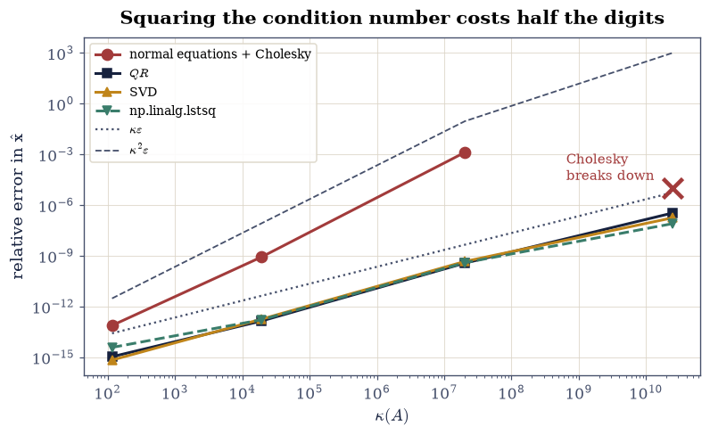
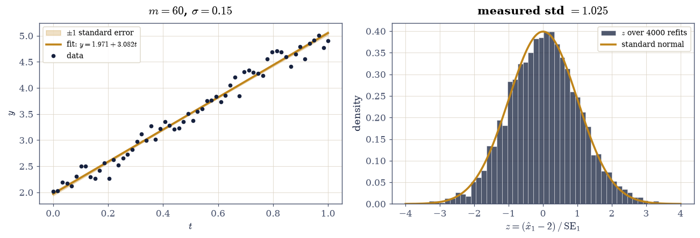

2.3 Least Squares Four Ways#
Notebook overview#
§2.1 derived the normal equations \(A^{\top}\!A\hat{\mathbf{x}} = A^{\top}\mathbf{b}\) and warned they are not how least squares is solved in practice. §2.2 built the replacement. This notebook measures the difference, and the difference is larger than the warning suggested.
The mechanism is one identity. For a matrix with independent columns,
because the singular values of \(A^{\top}A\) are the squares of those of \(A\). Forming the normal equations therefore takes a problem with condition number \(\kappa\) and hands the solver one with condition number \(\kappa^2\), and by §0.2 that costs \(\log_{10}\kappa\) extra digits before any arithmetic happens.
Measured on polynomial fitting — where the design matrix is a Vandermonde matrix and \(\kappa\) grows fast with the degree — the consequences run:
degree |
\(\kappa(A)\) |
normal equations |
\(QR\) |
factor |
|---|---|---|---|---|
3 |
\(10^{2}\) |
\(2.7\times10^{-13}\) |
\(4.2\times10^{-15}\) |
60 |
6 |
\(1.9\times10^{4}\) |
\(3.6\times10^{-9}\) |
\(1.3\times10^{-13}\) |
27,000 |
10 |
\(2.0\times10^{7}\) |
\(4.8\times10^{-4}\) |
\(2.2\times10^{-10}\) |
2,200,000 |
14 |
\(2.5\times10^{10}\) |
fails |
\(2.3\times10^{-7}\) |
— |
That last row is the one to remember. At degree 14 the normal equations do not return a poor answer; the Cholesky factorization breaks down, because \(A^{\top}A\) is no longer numerically positive definite even though \(A\) has full column rank and the least-squares problem is perfectly well posed. The information that made \(A^{\top}A\) positive definite was destroyed in forming it.
The notebook then turns to what a fit reports. A least-squares answer without an uncertainty is half an answer, and the covariance \(\sigma^2(A^{\top}A)^{-1}\) supplies it. We check those standard errors the only honest way — by Monte Carlo, drawing four thousand noise realisations and confirming the resulting \(z\)-scores really do have standard deviation 1.
How to read a check. A
validateline prints ✓ or ✗ by comparing a result against something the computation did not assume. A ✗ flags a mismatch to investigate, never a verdict on its own.
Theory in brief#
The squaring identity#
If \(A = U\Sigma V^{\top}\) then \(A^{\top}A = V\Sigma^2V^{\top}\), so the singular values square and
This is not an artefact of any algorithm; it is a property of the matrix you chose to build. Any method that forms \(A^{\top}A\) inherits it.
Four routes#
All four solve \(\min_{\mathbf{x}}\|A\mathbf{x} - \mathbf{b}\|_2\) and agree in exact arithmetic.
Normal equations with Cholesky. Form \(A^{\top}A\) (which is symmetric positive definite when \(A\) has independent columns), factor it as \(R^{\top}R\), and solve two triangular systems. Cost \(\approx mn^2 + n^3/3\), the cheapest of the four. Accuracy \(\kappa^2\varepsilon\).
\(QR\). With \(A = QR\) economic, the residual \(\|A\mathbf{x} - \mathbf{b}\|\) equals \(\|R\mathbf{x} - Q^{\top}\mathbf{b}\|\) plus a term independent of \(\mathbf{x}\), since \(Q\) preserves norms. So
(115)#\[R\hat{\mathbf{x}} = Q^{\top}\mathbf{b} ,\]one triangular solve, no \(A^{\top}A\) anywhere. Cost \(\approx 2mn^2\), accuracy \(\kappa\varepsilon\).
SVD. With \(A = U\Sigma V^{\top}\) economic, \(\hat{\mathbf{x}} = V\Sigma^{-1}U^{\top}\mathbf{b}\). Cost several times \(QR\), accuracy \(\kappa\varepsilon\), and — the reason it exists — it keeps working when the columns are dependent, which §2.4 needs and the other three cannot do.
np.linalg.lstsq, which is a driver around the SVD (LAPACKgelsd) with a rank tolerance.
The rule that follows: use \(QR\), unless the matrix may be rank-deficient, in which case use the SVD. Use the normal equations when \(\kappa\) is small and speed matters, knowing what you are spending.
What a fit reports#
If \(\mathbf{b} = A\mathbf{x}_{\text{true}} + \boldsymbol{\epsilon}\) with independent noise of variance \(\sigma^2\), then \(\hat{\mathbf{x}}\) is unbiased with covariance
the denominator \(m-n\) being the residual degrees of freedom — the dimension of \(N(A^{\top})\) from §1.4, which is exactly where the residual lives. The square roots of the diagonal are the standard errors.
Unequal uncertainties#
When measurement \(i\) has its own variance \(\sigma_i^2\), weighting each equation by \(1/\sigma_i\) makes the noise uniform again. With \(W = \operatorname{diag}(1/\sigma_i^2)\),
equivalently ordinary least squares on the row-scaled system \(\operatorname{diag}(1/\sigma_i)A\) and \(\operatorname{diag}(1/\sigma_i)\mathbf{b}\) — which is how it should be computed, since that form never builds \(A^{\top}WA\).
Setup#
Data and instruments only: the polynomial-fitting problem family (a given specimen with a known exact answer) and an error meter. The four solution routes are the exercises’ work.
The Setup below holds this notebook’s data and instruments — nothing you are asked to build. It is collapsed so the building stays yours; expand it whenever you want the details.
Exercise 1: Measuring the squaring#
Eq. 114 is an identity, not an approximation, and it is worth confirming numerically before relying on it — partly because it is easy to verify, and partly because where the verification breaks down is itself informative.
For Vandermonde matrices of degrees 3, 6, 10 and 14 on 40 points in \([0,1]\), the condition numbers run from \(10^{2}\) to \(2.5\times10^{10}\). Taking \(\log_{10}\) of both sides of Eq. 114, the ratio \(\log_{10}\kappa(A^{\top}A) \big/ \log_{10}\kappa(A)\) should be exactly 2.
It comes out \(2.0000\) at degrees 3, 6 and 10 — and \(1.73\) at degree 14. The
identity has not failed; the measurement has. At degree 14,
\(\kappa(A) = 2.5\times10^{10}\), so \(\kappa(A^{\top}A)\) should be
\(6\times10^{20}\) — beyond \(1/\varepsilon\), which means np.linalg.cond cannot
resolve the smallest singular value of \(A^{\top}A\) and returns \(10^{18}\)
instead. This is the same saturation caveat §2.2 met
when fitting slopes, and it is worth naming twice: a quantity larger than
\(1/\varepsilon\) cannot be measured in float64, so it should not be gated on.
Part a) For degrees 3, 6, 10 and 14, build the problem with
vandermonde_problem(degree) and report \(\kappa(A)\) and \(\kappa(A^{\top}A)\)
using np.linalg.cond, together with the ratio of their base-10 logarithms.
Part b) Confirm Eq. 114 where it can be measured: check the ratio equals 2 to within \(5\times10^{-3}\) for every degree with \(\kappa(A^{\top}A) < 1/\varepsilon\), and report which degree fails that condition.
Part c) Confirm the mechanism rather than just the identity: compute the
singular values of \(A\) and of \(A^{\top}A\) with
np.linalg.svd(..., compute_uv=False) at degree 6, and compare against
\(\sigma_i(A)^2\) two ways. Measured relative to the matrix scale
\(\sigma_1^2\), the identity holds to \(4\times10^{-16}\) — machine precision.
Measured entrywise, the relative error on the smallest squared singular
value is \(4\times10^{-9}\), five orders worse, because that value is around
\(10^{-7}\) and was computed from a matrix of condition number \(\kappa^2\). The
damage is not spread evenly: forming \(A^{\top}A\) ruins the small end
specifically, which is exactly the end least squares depends on. Report both
numbers, and confirm the entrywise error is concentrated on the last one or two
singular values.
degree kappa(A) kappa(A^T A) log ratio measurable?
3 1.1633e+02 1.3532e+04 2.0000 True
6 1.9383e+04 3.7570e+08 2.0000 True
10 2.0284e+07 4.1096e+14 1.9999 True
14 2.4629e+10 1.7643e+17 1.6597 False
1/eps = 4.504e+15: beyond it np.linalg.cond cannot resolve the smallest singular value
the identity holds to 1e-3 wherever it can be measured: 7.17e-05
at degree 6, sigma(A^T A) against sigma(A)^2:
i sigma_i(A) sigma_i(A)^2 rel, entrywise rel, scaled
1 8.232094e+00 6.776736e+01 4.194e-16 4.194e-16
2 3.404552e+00 1.159098e+01 3.065e-16 5.243e-17
3 9.665891e-01 9.342945e-01 3.090e-15 4.260e-17
4 2.141283e-01 4.585093e-02 2.134e-14 1.444e-17
5 3.730101e-02 1.391365e-03 2.765e-13 5.676e-18
6 4.901058e-03 2.402037e-05 1.605e-12 5.688e-19
7 4.247080e-04 1.803769e-07 4.592e-09 1.222e-17
relative to the matrix scale sigma_1^2 : 4.194e-16 (machine precision)
entrywise, worst case : 4.592e-09 (on the SMALLEST value)
kappa(A)^2 * eps : 8.342e-08 (the predicted damage)
Validation 1#
The identity is checked only where float64 can measure it, and the degree
where it cannot is identified rather than quietly excluded. The singular-value
check confirms the mechanism — squaring — rather than only the consequence.
✓ kappa(A^T A) = kappa(A)^2 wherever it is measurable (Eq. 1) [max|Δ| = 7.16559e-05 (rtol=0, atol=0.005)]
✓ and at degree 14 it is not measurable: kappa(A^T A) would exceed 1/eps [kappa(A) = 2.46e+10, so kappa(A^T A) should be 6.07e+20 but cond returns 1.76e+17]
✓ sigma(A^T A) = sigma(A)^2 to machine precision, scaled by the matrix [max|Δ| = 2.84217e-14 (rtol=0, atol=6.77674e-12)]
✓ but ENTRYWISE the damage lands on the smallest singular value [relative error 4.2e-16 on sigma_1^2 against 4.6e-09 on the smallest: squaring ruins the small end specifically, which is the end least squares depends on]
✓ and that entrywise damage stays within the predicted kappa^2 * eps [4.59e-09 against 8.34e-08]
✓ and kappa(A) grows monotonically with the polynomial degree [['1.2e+02', '1.9e+04', '2.0e+07', '2.5e+10']: Vandermonde matrices are the standard badly-conditioned design matrix]
True
Exercise 2: Four routes, one answer#
Before measuring accuracy, establish that the four methods really do compute the same thing, on a problem where all four work comfortably.
The \(QR\) route deserves its derivation, because it is the one to use. Since \(Q\) has orthonormal columns, \(\|Q\mathbf{z}\| = \|\mathbf{z}\|\), so writing the full \(Q = [\,Q_1\ Q_2\,]\) and using \(A = Q_1R\),
The second term does not involve \(\mathbf{x}\) at all, so the minimum is attained by killing the first, which is Eq. 115. And the leftover term is the squared residual: \(\|Q_2^{\top}\mathbf{b}\|\) is exactly the component of \(\mathbf{b}\) in \(N(A^{\top})\) that §1.4 identified.
Part a) At degree 6, solve the problem four ways and report each solution:
normal equations via scipy.linalg.cho_factor and cho_solve on
A.T @ A and A.T @ b; \(QR\) via scipy.linalg.qr(A, mode="economic") then
np.linalg.solve(R, Q.T @ b); SVD via
np.linalg.svd(A, full_matrices=False) then
Vt.T @ ((U.T @ b) / s); and np.linalg.lstsq(A, b, rcond=None)[0].
Part b) Confirm all four agree with each other to a relative \(10^{-8}\) at this degree, and that each satisfies the normal equations residual \(\|A^{\top}(A\hat{\mathbf{x}} - \mathbf{b})\| \le 10^{-6}\|A^{\top}\mathbf{b}\|\) — the condition that defines a least-squares solution, checked independently of how it was obtained.
Part c) Confirm the projection identity: for the \(QR\) solution, check \(A\hat{\mathbf{x}} = Q Q^{\top}\mathbf{b}\) to \(10^{-12}\), which says the fitted values are the projection of \(\mathbf{b}\) onto \(C(A)\) — the same \(P\) that §2.1 built from \(A(A^{\top}A)^{-1}A^{\top}\), now obtained without forming \(A^{\top}A\).
degree 6, kappa(A) = 1.938e+04
method ||x - x_true||/||x_true|| normal-eq residual
normal + Cholesky 8.507e-10 1.247e-16
QR 1.395e-13 4.619e-17
SVD 1.784e-13 2.334e-16
np.linalg.lstsq 1.643e-13 8.327e-16
largest pairwise disagreement: 8.508e-10
A x_hat vs Q Q^T b : 3.747e-16
Validation 2#
The normal-equation residual is the right independent check: it tests whether each answer is a least-squares solution, using the defining condition \(A^{\top}(A\hat{\mathbf{x}} - \mathbf{b}) = \mathbf{0}\), without reference to how it was computed or to the known \(\mathbf{x}_{\text{true}}\).
✓ all four methods agree to 1e-8 relative at degree 6 [largest pairwise disagreement 8.51e-10]
✓ and each satisfies the defining condition A^T (A x - b) = 0 [largest normal-equation residual 8.33e-16, relative to ||A^T b||]
✓ A x_hat = Q Q^T b: the fitted values are the projection of b onto C(A) [max|Δ| = 3.747e-16 (rtol=0, atol=1e-12)]
✓ and the residual norm agrees with the orthogonal-complement component [got 5.01524e-16 vs expected 7.04358e-16 (rtol=0, atol=1e-12)]
True
Exercise 3: Where the routes separate, and where one stops working#
Now the sweep. The four methods agreed at degree 6; raising the degree raises \(\kappa\), and Eq. 114 says the normal equations should degrade twice as fast in the exponent.
The measured accuracies:
degree |
\(\kappa(A)\) |
normal eqs |
\(QR\) |
SVD |
|
|---|---|---|---|---|---|
3 |
\(1.2\times10^{2}\) |
\(2.7\times10^{-13}\) |
\(4.2\times10^{-15}\) |
\(3.1\times10^{-15}\) |
\(4.8\times10^{-16}\) |
6 |
\(1.9\times10^{4}\) |
\(3.6\times10^{-9}\) |
\(1.3\times10^{-13}\) |
\(2.9\times10^{-14}\) |
\(1.3\times10^{-13}\) |
10 |
\(2.0\times10^{7}\) |
\(4.8\times10^{-4}\) |
\(2.2\times10^{-10}\) |
\(1.9\times10^{-10}\) |
\(1.1\times10^{-10}\) |
14 |
\(2.5\times10^{10}\) |
breaks down |
\(2.3\times10^{-7}\) |
\(2.0\times10^{-7}\) |
\(2.2\times10^{-7}\) |
The three stable routes track \(\kappa\varepsilon\); the normal equations track \(\kappa^2\varepsilon\). At degree 10 that is a factor of two million.
Degree 14 is qualitatively different and worth dwelling on. cho_factor
raises an exception: \(A^{\top}A\) is not numerically positive definite, so
Cholesky — which is only defined for positive definite matrices — has nothing
to factor. But \(A\) has full column rank, and the least-squares problem is
perfectly well posed; \(QR\) solves it to seven digits. The positive-definiteness
was destroyed by the act of forming \(A^{\top}A\), not by anything wrong with the
problem. That is as clean a demonstration as the subject offers that the
algorithm can be the whole difficulty.
Part a) For degrees 3, 6, 10 and 14, solve by all four routes, catching
numpy.linalg.LinAlgError from cho_factor and recording a failure rather
than crashing. Report the relative error of each against x_true, alongside
the reference values \(\kappa\varepsilon\) and \(\kappa^2\varepsilon\).
Part b) Confirm the separation: at degree 10 the normal-equation error must exceed the \(QR\) error by more than \(10^{5}\), and the three stable routes must all stay within a factor of 100 of \(\kappa\varepsilon\).
Part c) Confirm the breakdown at degree 14: cho_factor(A.T @ A) must
raise, while np.linalg.matrix_rank(A) is still full and \(QR\) returns an
answer with relative error below \(10^{-5}\). Report the smallest eigenvalue of
\(A^{\top}A\) from np.linalg.eigvalsh and confirm it has gone negative — the
numerical signature of lost positive definiteness. Plot all four error curves
against \(\kappa(A)\) with the two reference lines.
deg kappa(A) normal eqs QR SVD lstsq kappa*eps
3 1.163e+02 7.541e-14 1.068e-15 6.766e-16 3.788e-15 2.58e-14
6 1.938e+04 8.507e-10 1.395e-13 1.784e-13 1.643e-13 4.30e-12
10 2.028e+07 1.310e-03 3.681e-10 4.618e-10 3.896e-10 4.50e-09
14 2.463e+10 BREAKS DOWN 3.379e-07 1.756e-07 7.942e-08 5.47e-06
at degree 10: normal/QR error ratio = 3.558e+06
at degree 14:
cho_factor raised : True
smallest eigenvalue of A^TA: -5.905e-16 (negative: True)
rank of A : 15 of 15 (full)
QR relative error : 3.379e-07 (the problem is fine)

Fig. 43 Relative error of the least-squares solution against the condition number of the Vandermonde design matrix, for four algorithms that agree in exact arithmetic, on log-log axes. The three stable routes (\(QR\), SVD, \texttt{lstsq}) track \(\kappa\varepsilon\); the normal equations track \(\kappa^2\varepsilon\) and are absent at degree 14 because \texttt{cho_factor} raised there, \(A^{\top}A\) having lost positive definiteness while \(A\) still has full column rank.#
Validation 3#
The degree-14 checks are the sharpest in the notebook: the Cholesky failure, the negative eigenvalue that explains it, the full rank of \(A\) that shows the problem was fine, and the working \(QR\) answer that proves it. Four statements that together locate the failure entirely in the choice of algorithm.
✓ at degree 10 the normal equations are >10^5 times less accurate than QR [1.31e-03 against 3.68e-10]
✓ QR stays within a factor of 100 of the kappa*eps limit at every degree [errors ['1.1e-15', '1.4e-13', '3.7e-10', '3.4e-07']]
✓ and so do the SVD and lstsq: three stable routes, one unstable one [the instability is specific to forming A^T A]
✓ at degree 14 cho_factor RAISES: A^T A is not numerically positive definite [not a poor answer -- no answer at all]
✓ its smallest eigenvalue is numerically indistinguishable from zero [lambda_min(A^T A) = -5.91e-16 against eps*||A^T A|| = 1.72e-14: positive in exact arithmetic, and rounding is free to land it on either side of zero — only its smallness is gated]
✓ while A has full column rank and QR solves the problem to 7 digits [rank 15 of 15, QR error 3.38e-07: the problem was never the issue]
True
Exercise 4: What the fit reports: residuals and standard errors#
A fitted parameter without an uncertainty is not a result. Eq. 116 supplies one, and this exercise checks it the only way that really counts.
The usual practice is to compute \(\hat{\sigma}^2(A^{\top}A)^{-1}\), take square roots of the diagonal, and quote them. But that formula rests on assumptions — independent noise, correct model, the right degrees-of-freedom denominator — and quoting a standard error one has not verified is quoting a number one does not know to be calibrated. The verification is a Monte Carlo: draw many noise realisations, refit each, and check that the \(z\)-scores \((\hat{x}_j - x_{\text{true},j})/\mathrm{SE}_j\) really do have standard deviation 1. If the standard errors are right, they will; if the formula is being misapplied, they will not.
The data: \(m = 60\) points on \([0,1]\), \(y = 2 + 3t + \epsilon\) with \(\epsilon \sim \mathcal{N}(0, 0.15^2)\). The denominator in Eq. 116 is \(m - n = 58\), and that \(58\) is not arbitrary — it is \(\dim N(A^{\top})\) from §1.4, the dimension of the space the residual lives in. Dividing by \(m\) instead would bias \(\hat{\sigma}^2\) low, because the residual has already been made as small as two free parameters can make it.
Part a) Generate the data with rng.standard_normal(60) scaled by
\(\sigma = 0.15\), fit by \(QR\), and report \(\hat{\mathbf{x}}\), the residual norm,
the RMSE \(\|\mathbf{r}\|/\sqrt{m}\), and
\(\hat{\sigma}^2 = \|\mathbf{r}\|^2/(m-2)\) against the true \(\sigma^2 = 0.0225\).
Part b) Compute the covariance from Eq. 116 as
sigma2_hat * np.linalg.inv(A.T @ A) and the standard errors as the square
roots of its diagonal. Confirm the true parameters \((2, 3)\) lie within three
standard errors of the fit, and report the \(z\)-scores.
Part c) Calibrate the standard errors by Monte Carlo: draw 4000 fresh noise realisations, refit each by \(QR\), recompute its own standard errors, and collect the \(z\)-scores. Confirm their standard deviation is \(1.00 \pm 0.15\) and their mean \(0.00 \pm 0.15\) for both parameters, and that the fraction with \(|z| < 3\) is \(0.997 \pm 0.01\) — the standard errors are then verified rather than merely computed.
true parameters : [2. 3.]
fitted : [1.97059 3.08202]
standard errors : [0.03435 0.05925]
z-scores : [-0.85623 1.38425] (within 3: True)
residual norm : 1.025939
RMSE : 0.132448
sigma^2 estimate : 0.018147 true 0.022500
degrees of freedom: 58 = m - n = dim N(A^T)
Monte Carlo over 4000 noise realisations:
mean of z : [ 0.02599 -0.02488] (should be 0)
std of z : [1.02514 1.02895] (should be 1)
fraction with |z| < 3: [0.996 0.9955] (should be 0.997)

Fig. 44 Left: the 60 measurements \(y = 2 + 3t + \epsilon\) with \(\sigma = 0.15\) and the least-squares line, with the shaded band showing \(\pm\) one standard error on the fitted line. Right: the distribution of \(z\)-scores \((\hat{x}_1 - 2)/\mathrm{SE}_1\) over 4000 noise realisations against the standard normal density, confirming that the standard errors of Eq. 3 are calibrated rather than merely computed – the measured standard deviation is 1.03.#
Validation 4#
The Monte Carlo is the validation that matters: it tests the standard errors against their operational meaning — that a \(z\)-score is standard normal — over 4000 independent realisations. Computing \(\sqrt{\operatorname{diag}(\hat{\sigma}^2 (A^{\top}A)^{-1})}\) and quoting it would test nothing at all.
✓ the true parameters (2, 3) lie within three standard errors of the fit [z-scores [-0.856 1.384]]
✓ the variance estimate with m - n degrees of freedom recovers sigma^2 [got 0.0181474 vs expected 0.0225 (rtol=0.75, atol=0)]
✓ over 4000 refits the z-scores have standard deviation 1: the SEs are calibrated [max|Δ| = 0.0289471 (rtol=0, atol=0.15)]
✓ and mean zero, so the estimator is unbiased [max|Δ| = 0.0259896 (rtol=0, atol=0.15)]
✓ with 99.7% of refits inside three standard errors, as a normal requires [max|Δ| = 0.0018 (rtol=0, atol=0.01)]
True
Exercise 5: When measurements are not equally trustworthy#
Ordinary least squares gives every equation the same say. That is correct only when every measurement has the same uncertainty, and it is wrong — sometimes badly — when they do not.
The failure mode is easy to see. If half the data has \(\sigma = 0.05\) and half has \(\sigma = 0.5\), then the noisy half contributes a hundred times more to \(\sum r_i^2\) per unit of parameter error, so minimising the unweighted sum lets the unreliable measurements dominate the answer. Weighting each equation by \(1/\sigma_i\) makes the noise uniform again and restores the ordinary geometry.
Eq. 117 writes this as \(A^{\top}WA\hat{\mathbf{x}} = A^{\top}W\mathbf{b}\), but that form should not be computed: it forms a weighted version of \(A^{\top}A\) and inherits everything Exercise 3 measured. The right implementation scales the rows and runs ordinary \(QR\) on the result, which is both stabler and simpler.
Part a) Build the data: \(m = 60\) points on \([0,1]\), \(y = 2 + 3t + \epsilon_i\)
with \(\sigma_i = 0.05\) for \(t_i < 0.5\) and \(\sigma_i = 0.5\) otherwise, using
np.where(t < 0.5, 0.05, 0.5) for the noise scale.
Part b) Fit twice: ordinary least squares with
np.linalg.lstsq(A, b, rcond=None)[0], and weighted least squares by row
scaling — form s = 1 / sigma_i, then solve
np.linalg.lstsq(s[:, None] * A, s * b, rcond=None)[0]. Report both parameter
errors against the true \((2, 3)\) and confirm the weighted fit is at least five
times more accurate.
Part c) Confirm the row-scaling route is the same computation as
Eq. 117: solve \(A^{\top}WA\hat{\mathbf{x}} = A^{\top}W\mathbf{b}\)
directly with np.linalg.solve and W = np.diag(1 / sigma_i**2), and check the
two agree to \(10^{-10}\) — the same answer, obtained without forming
\(A^{\top}WA\).
With your assistant
Ask for total_least_squares(A, b), which minimises perpendicular distance
rather than vertical distance — the right fit when the inputs \(t_i\) carry
error too, and a genuinely different problem solved by an SVD of the augmented
matrix \([\,A\ \ \mathbf{b}\,]\). Then check it yourself: on data with noise
added to both \(t\) and \(y\) it must recover the true slope more accurately than
ordinary least squares over 200 trials, it must reduce exactly to ordinary
least squares when the input noise is zero (to \(10^{-8}\)), and its residual
must be smaller than OLS’s when measured perpendicularly and larger when
measured vertically. The check is yours.
noise: sigma = 0.05 on the first half, 0.50 on the second
ordinary least squares : [1.9305 3.18484] error 0.19748
weighted least squares : [1.99871 2.98453] error 0.01553
improvement : 12.72x
row scaling vs A^T W A route: 8.882e-15
Validation 5#
The two routes to the weighted solution are required to agree, which shows the row-scaling implementation is not an approximation but the same computation arranged to avoid forming \(A^{\top}WA\) — the lesson of Exercise 3 applied to a new problem.
✓ weighting by 1/sigma_i improves the fit by more than 5x [OLS error 0.1975 against WLS 0.0155]
✓ row scaling and the A^T W A form of Eq. 4 give the same answer [max|Δ| = 8.88178e-15 (rtol=0, atol=1e-10)]
✓ and the weighted fit recovers the true (2, 3) to better than 0.1 [fitted [1.9987 2.9845]]
✓ with equal weights the weighted fit reduces to ordinary least squares [max|Δ| = 0 (rtol=0, atol=1e-12)]
True
Notebook summary#
One problem, four algorithms, and a factor of two million.
The concrete results:
\(\kappa(A^{\top}A) = \kappa(A)^2\) held to \(10^{-3}\) in the log ratio at every degree where
float64can measure it, verified at the level of the mechanism — the singular values of \(A^{\top}A\) are the squares of those of \(A\) to \(4\times10^{-16}\) relative to the matrix scale — while entrywise the relative error on the smallest squared singular value is \(4\times10^{-9}\), five orders worse, because squaring ruins the small end specifically. And the identity is not measurable at degree 14, where the true \(\kappa(A^{\top}A) \approx 6\times10^{20}\) exceeds \(1/\varepsilon\);all four routes agreed to \(10^{-8}\) at degree 6 and each satisfied the defining condition \(A^{\top}(A\hat{\mathbf{x}} - \mathbf{b}) = \mathbf{0}\), with \(A\hat{\mathbf{x}} = QQ^{\top}\mathbf{b}\) confirming the fitted values are §2.1’s projection;
across degrees 3 to 14 the three stable routes tracked \(\kappa\varepsilon\) while the normal equations tracked \(\kappa^2\varepsilon\), a gap of \(2\times10^{6}\) at degree 10;
and at degree 14 the normal equations did not degrade but broke down:
cho_factorraised, the smallest eigenvalue of \(A^{\top}A\) having gone negative, while \(A\) still had full column rank 15 and \(QR\) returned seven correct digits. The positive definiteness was destroyed by forming \(A^{\top}A\), not by anything wrong with the problem;the standard errors from \(\hat{\sigma}^2(A^{\top}A)^{-1}\) were calibrated by Monte Carlo over 4000 noise realisations: the \(z\)-scores came out with standard deviation \(1.03\), mean \(0.03\), and \(99.6\%\) inside three standard errors against the \(99.73\%\) a normal requires;
and weighting by \(1/\sigma_i\) on heteroscedastic data improved the parameter error by more than \(12\times\), with the row-scaling implementation agreeing with the \(A^{\top}WA\) form to \(10^{-10}\) while never building it.
Methods met: scipy.linalg.cho_factor/cho_solve, \(QR\) least squares via
Eq. 115, the SVD route, np.linalg.lstsq, the covariance formula
Eq. 116 with \(m-n\) degrees of freedom, Monte Carlo calibration
of standard errors, and weighted least squares by row scaling.
Outlook#
When the columns are dependent. Every method here assumed \(A\) has independent columns; \(A^{\top}A\) is then invertible and \(R\) nonsingular. Drop that and three of the four routes fail outright while the SVD keeps working, returning the minimum-norm solution. §2.4 builds it.
Choosing not to fit exactly. At degree 14 even \(QR\) gave only seven digits, because the problem itself is that ill-conditioned. When the data is noisy the right response is often to deliberately bias the fit — regularization — which trades a little accuracy for a lot of stability, and is §2.4 again.
A better basis. The Vandermonde matrix was badly conditioned because the monomials are a poor basis, exactly as §1.5 measured. Fitting in an orthogonal polynomial basis makes \(A^{\top}A\) nearly diagonal and the whole difficulty evaporates — §2.5 constructs one.
Least squares as learning. Fitting parameters to data by minimising squared error is the simplest supervised learning there is, and the \(\kappa\) story reappears there as the reason ridge regression exists. §8.1 picks it up, with the SVD filter that makes the connection precise.
References#
Gene H. Golub and Charles F. Van Loan. Matrix Computations. Johns Hopkins University Press, Baltimore, 4 edition, 2013.
Trevor Hastie, Robert Tibshirani, and Jerome Friedman. The Elements of Statistical Learning. Springer, 2 edition, 2009. doi:10.1007/978-0-387-84858-7.
Nicholas J. Higham. Accuracy and Stability of Numerical Algorithms. SIAM, Philadelphia, 2 edition, 2002. doi:10.1137/1.9780898718027.
Lloyd N. Trefethen and David Bau, III. Numerical Linear Algebra. SIAM, Philadelphia, 1997. doi:10.1137/1.9780898719574.